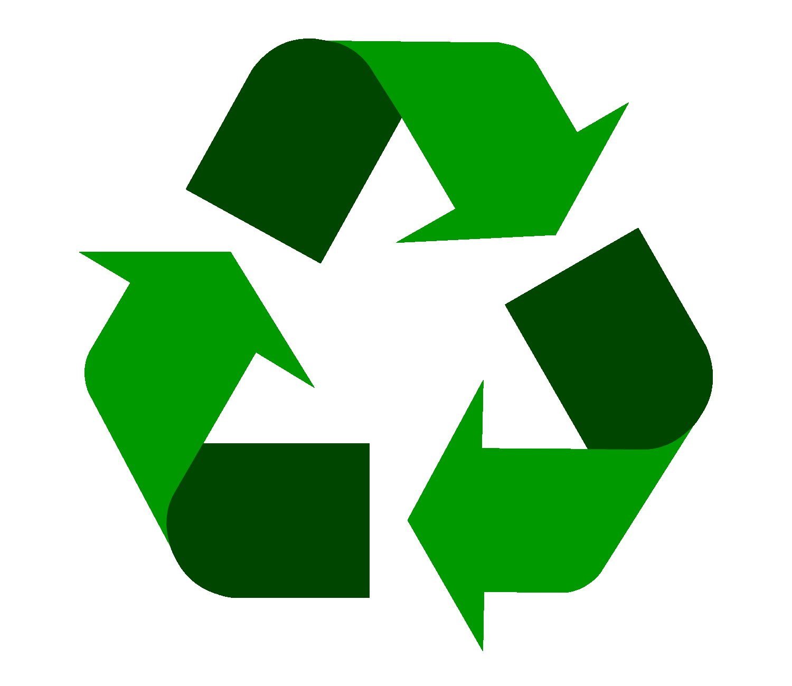
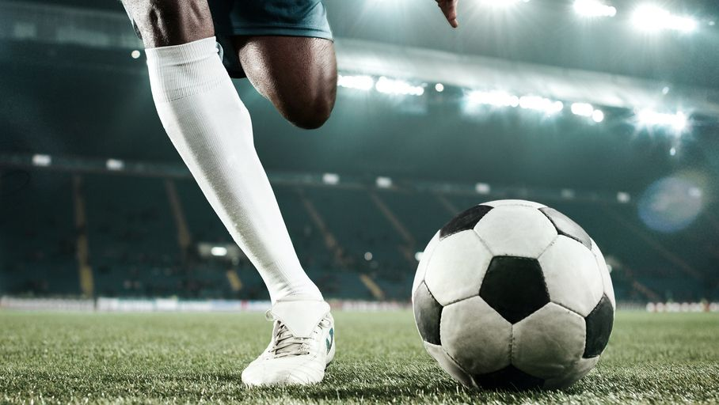
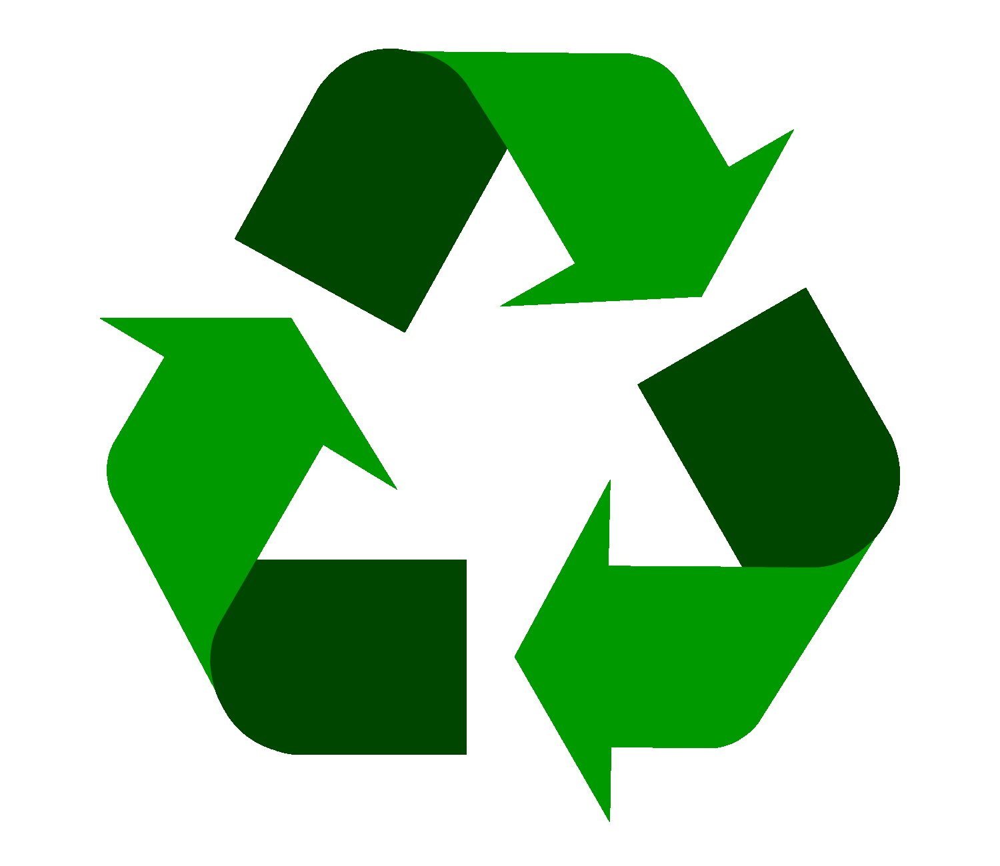
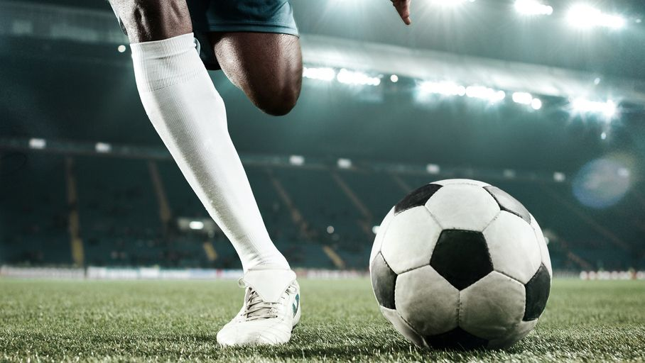

Caractéristiques :
Nouveau ballon de football

Recyclé et recyclable

Ce ballon respectueux de l'environnement est adaptée a tous les joueurs de foot, amateur ou professionnel
Nouveau ballon de football

Recyclé et recyclable

Ce ballon respectueux de l'environnement est adaptée a tous les joueurs de foot, amateur ou professionnel